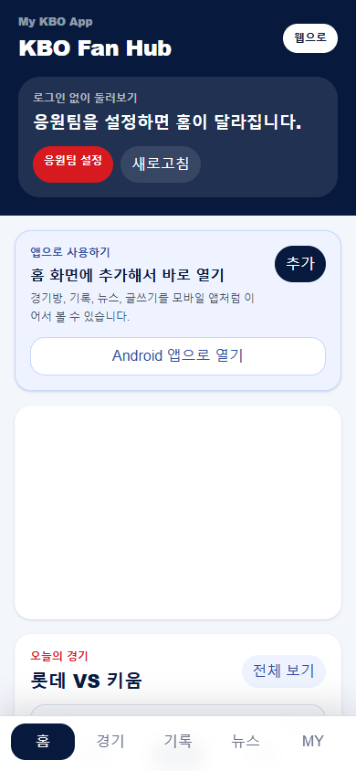
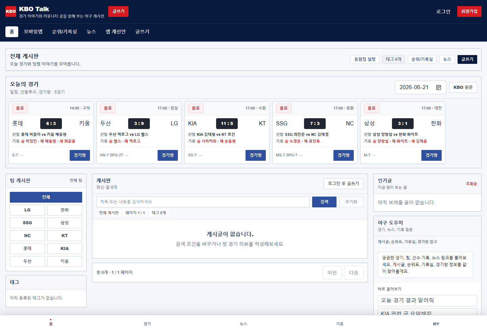

15초 소개
내가 어떤 사람인지, 어떤 문제를 봤는지 먼저 보이게 했습니다.
KBO Fan Hub 포트폴리오
KBO 팬이 경기 전, 경기 중, 경기 후에 찾는 정보를 한 화면에서 이어보는 서비스로 정리했습니다.
고민석 · KBO 앱 서비스 기획 / 데이터 분석 지원
웹 데모 · 모바일 앱형 화면 · Android APK

다시 정리한 기준
참고 글의 핵심을 제 프로젝트에 맞춰 적용했습니다.
내가 어떤 사람인지, 어떤 문제를 봤는지 먼저 보이게 했습니다.
서비스 흐름과 화면을 같이 보여줘 프로젝트 맥락을 줄였습니다.
문제, 시도, 해결, 배운 점이 보이도록 따로 분리했습니다.
기술을 나열하지 않고 어디에 왜 썼는지 적었습니다.
프로젝트 한눈에 보기
야구팬은 오늘 경기에서 시작해 라인업, 문자중계, 기록, 뉴스, 팬 의견으로 이동합니다. 이 흐름을 경기방 중심으로 재구성했습니다.
경기 시간, 양 팀, 선발투수, 라인업을 빠르게 확인합니다.
스코어와 이닝별 문자중계로 흐름을 따라갑니다.
박스스코어, 타자 기록, 투수 기록, 뉴스로 다시 봅니다.
리뷰를 쓰고 댓글과 추천으로 다른 팬 의견에 반응합니다.
처음 보는 사람을 위한 화면
웹에서는 글과 경기 정보를 넓게 보고, 모바일에서는 자주 쓰는 탭을 앞에 뒀습니다.

내가 직접 한 역할
개인 프로젝트라서 특정 기능 일부가 아니라 서비스 흐름 전체를 직접 경험했습니다.
오늘 경기에서 시작해 경기방, 기록실, 뉴스, 글쓰기로 이어지는 흐름을 잡았습니다.
Next.js 화면과 API, PostgreSQL/Prisma 모델, 게시판 기능을 구현했습니다.
Vercel/Supabase 배포, 모바일 앱형 화면, Android WebView APK까지 연결했습니다.
핵심 기능
경기방은 이번 프로젝트의 중심 화면입니다. 데이터가 없을 때도 빈 화면 대신 현재 상태를 알려주는 데 신경 썼습니다.
트러블슈팅 1
RAG 기능을 붙이는 과정에서 pgvector 확장과 배포 DB 설정이 맞지 않으면 기능이 시작되지 않는다는 것을 경험했습니다.
트러블슈팅 2
KBO 경기 데이터는 경기 상태에 따라 선발, 라인업, 기록 공개 여부가 달랐습니다.
기술 스택
단순 나열 대신, 어떤 문제를 해결하기 위해 어떤 기술을 썼는지 적었습니다.
왜 경기방 구조를 잡았는지, 어떤 문제를 만났는지, 기술을 왜 선택했는지를 중심으로 설명하겠습니다.
웹 데모
jungle-ai-board.vercel.app
모바일 앱형 화면
/mobile-app
앱 개선안 페이지
/portfolio/kbo-app
GitHub / Android APK
kominsuk1064/jungle-ai-board